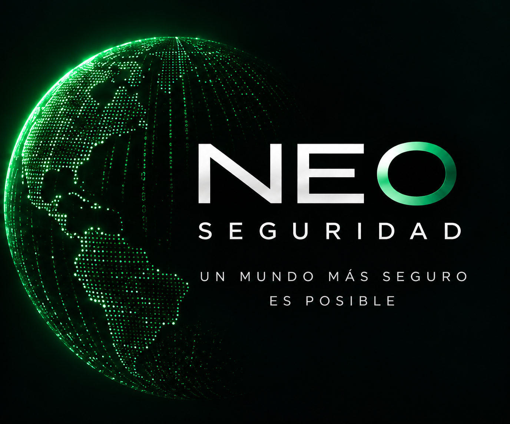

Demasiadas señales
Alertas sin relevancia compiten por la atención del operador.
NEO transforma cámaras, analíticas y alertas en eventos accionables, concentrando la atención donde realmente importa.
NEO — menos ruido. Más control.

Punto de partida
La tecnología creció más rápido que la capacidad humana para revisarla
Alertas sin relevancia compiten por la atención del operador.
La carga se dimensiona por cámaras y rondas, aunque muchas escenas no tengan actividad.
Video, alarmas, mensajería y registros obligan a cambiar de plataforma.
La respuesta depende de experiencia, memoria y disciplina individual.
La reconstrucción del incidente exige reunir datos desde distintas fuentes.
Las centrales agregan personas para compensar ruido, dispersión y riesgo humano.
Problema central
Una alerta irrelevante consume tiempo y desplaza la atención de la siguiente
El operador recibe más señales de las que puede revisar con profundidad.
La revisión rápida favorece omisiones, respuestas tardías y decisiones inconsistentes.
La dotación crece para sostener un modelo que aún depende del volumen bruto.
NEO interviene antes de que el ruido llegue al operador
Principio de diseño
NEO concentra la intervención humana donde existe movimiento relevante
Ciclo de atención
Integra eventos provenientes de cámaras, analíticas y dispositivos compatibles.
Valida movimiento y aplica reglas para descartar señales sin valor operacional.
Ordena las alertas según tipo de evento, sitio, horario y nivel de atención.
Entrega contexto al operador, registra acciones y conserva la trazabilidad.
El operador recibe una cola de trabajo priorizada y respaldada por evidencia
Bondades del software
Reúne eventos y contexto en una sola vista operacional.
Reduce alertas asociadas a movimientos sin valor para el protocolo.
Ordena la atención por criticidad, horario, sitio y regla definida.
Registra alerta, revisión, decisión, contacto y cierre del evento.
Guía al operador con acciones asociadas a cada tipo de incidente.
Entrega datos para medir carga, tiempos, cumplimiento y desempeño.
Permite crecer en sitios y dispositivos sin replicar la misma carga humana.
Conecta la operación con infraestructura y canales definidos por el proyecto.
Optimización de recursos
NEO permite dimensionar la dotación según el trabajo que realmente llega al operador
La carga crece principalmente con:
La carga se aproxima a la demanda real:
Impacto esperado Menor necesidad de operadores por cámara monitoreada, con una dotación calculada mediante piloto y datos reales de eventos.
NEO habilita la reducción de dotación. El porcentaje depende de la tasa de alertas efectivas, horarios, protocolos e integraciones de cada operación.
Valor operacional
Implementación
Cámaras, alertas, dotación y tiempos actuales.
Reglas, horarios, criticidad y protocolos.
Operación controlada y ajuste de filtros.
Dimensionamiento y despliegue progresivo.
La decisión sobre dotación debe apoyarse en resultados medidos, no en una promesa genérica de ahorro
Video
La operación deja de organizarse solo alrededor de cámaras y se concentra en alertas efectivas que requieren criterio humano.
Eso permite reducir ruido, estandarizar la respuesta y disminuir la necesidad de recurso humano por cámara monitoreada.
Contáctanos